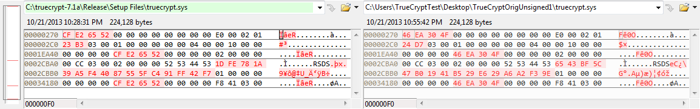

How I compiled TrueCrypt 7.1a for Win32 and matched the official binaries
TrueCrypt is an open-source encryption software capable of on-the-fly encryption on file-, partition- or disk-based virtual disks. It supports various ciphers, including AES, Serpent, Twofish or some combination of them; provides a full disk encryption (FDE) feature under Windows environment with pre-boot authentication; and even allows plausible deniability.Hence TrueCrypt seems to be a perfect solution to protect sensitive files. However, the recent news about the NSA programs enables all conspiracy theorists to imagine the worst of all. What if TrueCrypt was backdoored? What if the binaries provided on the website were different than the source code and they included hidden features?
We show in this article how to reproduce a deterministic compilation process specific to TrueCrypt 7.1a for Windows that matches the official binaries, and relieve the world from at least some concerns.
Since this article was put online, an extended version of the work has been published. Make sure to check the following paper:
Challenges and Implications of Verifiable Builds for Security-Critical Open-Source Software. X. de Carné de Carnavalet and M. Mannan. Annual Computer Security Applications Conference (ACSAC'14), Dec. 8-12, 2014, New Orleans, Louisiana, USA.
Challenges and Implications of Verifiable Builds for Security-Critical Open-Source Software. X. de Carné de Carnavalet and M. Mannan. Annual Computer Security Applications Conference (ACSAC'14), Dec. 8-12, 2014, New Orleans, Louisiana, USA.
Article versions changelog
- 2014-05-29: Added a paragraph about v7.2 after the sudden shutdown of the TrueCrypt project
- 2013-10-27: Added in appendix the checksums of the files downloaded in this analysis, provided better understanding of the installer checksum difference, verified MVC++ 1.52 found on the web with the original, fixed typos
- 2013-10-24v2: Clarified few sentences about backdoors, explained the PDB info difference, made clear my results are meant to be reproduced
- 2013-10-24: Added analysis results of v7.0a and v6.3a
- 2013-10-23: Explained differences in more details, added assembly comparison
- 2013-10-22: Added PGP/X.509 screenshots, clarified some comparison comments
- 2013-10-21: First version
Challenges and implications
TrueCrypt is a project that doesn't provide deterministic builds. Hence, anyone compiling the sources will get different binaries, as pointed by this article on Privacy Lover, saying that "it is exceedingly difficult to generate binaries from source that match the binaries provided by Truecrypt." This has led some speculations regarding the possibility of having backdoors in the official binaries that cannot be found easily.This concern has also been raised in this analysis, saying: "Without a very expensive “reverse engineering” it can't be proved that they are compiled from the published source code. Since we haven't done such a reverse engineering we can't preclude that there is a back door hidden within those binary packages."
Recently, the IsTrueCryptAuditedYet project was launched and aims at reviewing TrueCrypt's security and, among other things, providing deterministic build so as to enable everyone to compare her version to the official one. However, it is still at an early stage (as of October 2013) and tries to raise funds first.
In this article, I present how I compiled TrueCrypt 7.1a for Windows and reached a very close match with the official binaries. I am also able to explain the small remaining differences and then prove that the official binaries indeed come from the public sources.
UPDATE: Version 7.2
The TrueCrypt project was apparently abruptly shut down on May 28, 2014 and provides a farewell edition (v7.2) that is stripped of any code that enables the creation of new encrypted volumes and adds a feature to decrypt existing non-system encrypted drives in-place to facilitate the transition to other encryption tools. The legitimacy of this last release can be questioned, however you can at least verify that it matches the available sources (and hence again, that the given compiled source code is the one you can read) by following the steps in this article. Version 7.2 is compiled in the same way as version 7.1a, with a project path set to c:\truecrypt-7.2, consistent with the previous builds' scheme. According to my analysis, the binaries of v7.2 for Windows match the available sources. See checksums in appendix.Note: Links to the TrueCrypt website are no longer working, you will have to find the files elsewhere such as on cyberside.net.ee or github.com/drwhax/truecrypt-archive.
Preparing the environment and compiling
1. Download TrueCrypt binary and sources
First of all, we want to download TrueCrypt and make sure it really is what the website is offering by checking the binary authenticity.The download page is at http://www.truecrypt.org/downloads and doesn't provide HTTPS to download the software. Download TrueCrypt 7.1a for Windows 7/Vista/XP/2000 (TrueCrypt Setup 7.1a.exe).
Filename: TrueCrypt Setup 7.1a.exe
MD5: 7a23ac83a0856c352025a6f7c9cc1526
SHA1: 7689d038c76bd1df695d295c026961e50e4a62ea
The PGP signature of the binary can be downloaded through the button PGP Signature, which makes you download TrueCrypt Setup 7.1a.exe.sig over HTTPS (although with the NSA in the middle, it might not mean much).
Filename: TrueCrypt Setup 7.1a.exe.sig
MD5: 015a30c68450b9559bda52eb2fa0ff3e
SHA1: e1e3efaeac2fbcdbff0c2c62ac33233bd356edfa
Next, download the PGP public key file (TrueCrypt-Foundation-Public-Key.asc) to verify the signature over the TrueCrypt binary. It is provided through an HTTPS link too.
Filename: TrueCrypt-Foundation-Public-Key.asc
MD5: 41612478ceeee8448b87a5e872f07302
SHA1: c871f833d6c115f4b4861eed859ff512e994b9fc
On the source code/public key page, download the sources (TrueCrypt 7.1a Source.zip) for Windows.
Filename: TrueCrypt 7.1a Source.zip
MD5: 3ca3617ab193af91e25685015dc5e560
SHA1: 4baa4660bf9369d6eeaeb63426768b74f77afdf2
In order to verify the PGP signature of the binary, I use Gpg4win 2.2.1. Download and install it to follow the instructions below, or verify the signature with your favorite software.
- After the installation, launch Kleopatra.
- Import the .asc file in the keyring (File > Import certificates).
- Now you should mark the key as trusted: right click on the TrueCrypt Foundation public key in the list under Imported Certificate tab > Change Owner Trust, and set it as I believe checks are casual.
You should also generate your own key pair to sign this key in order to show you really trust it and get a nice confirmation when verifying the binary.- Go to File > New Certificate, choose OpenPGP key pair and follow the instructions (no need to provide true data here).
- Put any passphrase and remember it. Finally, no need to backup or send your key to a server.
- Once you have your keys, right click again on TrueCrypt's public key and choose Certify Certificate.
- Check TrueCrypt Foundation, look at the fingerprint given and compare it with the one shown on TrueCrypt's website (http://www.truecrypt.org/downloads2): they should be the same.
- If they are the same, check the box I have verified the fingerprint, click Next and Certify.
- Enter your passphrase to use your private key to sign TrueCrypt's key.
- Now, to verify the binary signature, go to File > Decrypt/Verify files... and choose TrueCrypt Setup 7.1a.exe.sig that you downloaded before. The signed data field should point to the binary to verify (TrueCrypt Setup 7.1a.exe).
- Click Decrypt/Verify: You should see a nice green label saying the signature is valid. This means that the TrueCrypt Setup 7.1a.exe file you downloaded is what TrueCrypt Foundation provides on their website and you downloaded that exact binary, as long as you trust their public key you downloaded over HTTPS.
- Right click on the executable, go to Digital Signatures.
- Select TrueCrypt Foundation in the list, click on Details
- You should see This digital signature is OK. Now, you can trust this binary if you trust VerySign, a popular certificate authority, and its public key that is embedded in your OS.

2. Download the prerequisites
In the sources, the Readme file specifies the following list of software to have on your system in order to compile TrueCrypt:- Microsoft Visual C++ 2008 SP1 (Professional Edition or compatible)
- Microsoft Visual C++ 1.52 (available from MSDN Subscriber Downloads)
- Microsoft Windows SDK for Windows 7 (configured for Visual C++)
- Microsoft Windows Driver Kit 7.1.0 (build 7600.16385.1)
- RSA Security Inc. PKCS #11 Cryptographic Token Interface (Cryptoki) 2.20 header files
- NASM assembler 2.08 or compatible
- gzip compressor
It is very important to use the same exact version of the compilers and tools used by the developers because a slight difference can completely change the output binary (as I have experienced), and can lead people to think TrueCrypt binaries are backdoored. Also, it is important to install the right software updates for Visual Studio 2008 SP1: no more, no less than what the developers had installed.
Let's examine how to gather the prerequisites:
- For Microsoft Visual C++ 2008, I downloaded Microsoft Visual Studio 2008 (VS2008) Professional from my university's MSDNAA partnership. The SP1 is available on Microsoft's website.
- I found a copy of VC++ 1.52c on vetusware.com.
Hopefully, it is trusted. See appendix for checksums. - Microsoft Windows SDK for Windows 7 can be downloaded from Microsoft. The latest one is named Microsoft Windows SDK for Windows 7 and .NET Framework 4, for which you should have Microsoft .NET Framework 4 installed first. The previous version was named Microsoft Windows SDK for Windows 7 and .NET Framework 3.5 SP1 and only requires .NET Framework 3.5 SP1. Both are OK to use because TrueCrypt doesn't use .NET Framework anyway.
The ISO file is either GRMSDK_EN_DVD.iso for the 32-bit or GRMSDKX_EN_DVD.iso for the 64-bit version. Both are fine in our case; use the one matching your OS's architecture. - Microsoft Windows Driver Kit 7.1.0 is also found on Microsoft's website. The filename is GRMWDK_EN_7600_1.ISO.
- The PKCS #11 header files needed are pkcs11.h, pkcs11f.h and pkcs11t.h, available at ftp://ftp.rsasecurity.com/pub/pkcs/pkcs-11/v2-20.
- NASM 2.08 can be found on the official website.
- According to this post on stackoverflow.com, gzip for Windows can be found in the gnuwin32 project on SourceForge (version 1.3.12-1 tested). A difference in the version used can lead to a different compression algorithm and a different binary. Fortunately this version works well for our purpose.
- dd, although not mentioned in the Readme, is required. Some dd for Win32 found on the Internet do not behave correctly during the compilation process (different arguments are expected and no output is generated). One compatible version can be found in CoreUtils for Windows.
3. Installing the prerequisites
This paragraph is directly taken and adapted from TC's Readme file.- Microsoft Visual Studio 2008: Install it with the Full configuration, or select Custom and check X64 Compilers and Tools under Microsoft Visual Studio 2008 Professional Edition/Language Tools/Visual C++. Once finished, install the SP1. Then, install the 4 updates one by one.
- Microsoft Visual C++ 1.52c: Unzip the MSVC15 folder from Microsoft - Visual C++ 1.52c - Installation CD.zip to C:\, so you have C:\MSVC15. Then, create an environment variable 'MSVC16_ROOT' pointing to that directory.
On Windows 7: Go to Control Panel > System > Advanced system settings > click Environment Variables... > Under System variables, click New... > Put MSVC16_ROOT as variable name and C:\MSVC15 as value.
Note: The 16-bit installer MSVC15\SETUP.EXE cannot be run on 64-bit Windows, but it is actually not necessary to run it. You only need to extract the folder 'MSVC15', which contains the 32-bit binaries required to build the TrueCrypt Boot Loader. - Microsoft Windows SDK for Windows 7: Use installation defaults. After installation, you need to switch SDK from version 6 to version 7.1 in Visual Studio. To do this, go to the Start Menu > Microsoft Windows SDK v7.1 > Visual Studio Registration > Windows SDK Configuration Tool > Select v7.1 and press Make Current.
- Microsoft Windows Driver Kit 7.1.0: When installing WDK, only the Build Environments option is of importance for us, you can save some time by selecting this one only. Install in the default location (%SYSTEMDRIVE%\WinDDK).
- PKCS #11 header files: Create a folder PKCS11 in C:\ and put the 3 header files there. Then, create an environment variable 'PKCS11_INC' pointing to that directory.
On Windows 7: Go to Control Panel > System > Advanced system settings > click Environment Variables... > Under System variables, click New... > Put PKCS11_INC as variable name and C:\PKCS11 as value. - NASM 2.08: Install it (or unzip it) to C:\nasm. Then, add the installation path to the PATH environment variable.
On Windows 7: Go to Control Panel > System > Advanced system settings > click Environment Variables... > Under System variables, select the line whose variable is Path, click Edit... > add a semi-colon (;) at the end of the line then append the installation path (C:\nasm in this case). - gzip & dd: Copy gzip.exe and dd.exe in C:\Windows\System32 for the 32-bit version of Windows, or in C:\Windows\SysWOW64 for the 64-bit version.
4. Compiling TrueCrypt
Setting up the environment was the hardest task. Now:- Open the solution file 'TrueCrypt.sln' in Microsoft Visual Studio 2008 (select Visual C++ Development Settings when opening for the first time)
- Select 'All' as the active solution configuration
- Build the solution
- If successful, there should be newly built TrueCrypt binaries in the 'Release' folder.
Comparison with the official binaries
Flat comparison
My compiled files have the following properties:| Name | Size (B) | MD5 | SHA1 |
| TrueCrypt.exe | 1,508,864 | a34df1c7f1ad4fd9f2eb4ad7e5cf18db | b90e23030ba2370f9aecf186e5548765eab8b93c |
| TrueCrypt Format.exe | 1,603,072 | b673d02aab960cad1b42f7dfd92161c3 | 27351c6501797972ad600a3ecd3d7a9594c988b8 |
| TrueCrypt Setup.exe | 1,058,816 | 0b37078976b7fb2bb3e5cfe13890b945 | ef491a6817201c9d086b8f9e29cd57655c4eb020 |
| TrueCrypt Setup 7.1a.exe | 3,436,448 | fc611c31f1de30cfcbe4c4956e81f99b | e2c837cfb123f5a61b7526bdcce1d6e1f947303c |
| truecrypt.sys | 224,128 | 055241c3e5a21cd8bac65f8163b1b233 | b973a254e971a75b6c893444e4c98938e57386a4 |
| truecrypt-x64.sys | 223,744 | 4fc3ea4aa4e4d00744ffbb00f86f7a84 | ad84b6c2fd7c2a29c1d541e4e24e8fd534fd839c |
Table 1. Files, their size and checksums, from my own build
The original files have the following properties:
| Name | Size (B) | MD5 | SHA1 |
| TrueCrypt.exe | 1,516,496 | fa8f08013422a4eb68072668b3a73293 | 4c4891f5eafcf9b96be01e31031992d9e98d39c3 |
| TrueCrypt Format.exe | 1,610,704 | 48538c19abe905d22e147b1c25d90880 | 34442e400e6cb2534f33a0b1599defe36eefef2a |
| TrueCrypt Setup 7.1a.exe | 3,466,248 | 7a23ac83a0856c352025a6f7c9cc1526 | 7689d038c76bd1df695d295c026961e50e4a62ea |
| truecrypt.sys | 231,760 | ed5e4ce36c54f55e7698642e94d32ec7 | 62fc4f76540740e63c7f0a33e3a1b66411f0a303 |
| truecrypt-x64.sys | 231,376 | 370a6907ddf79532a39319492b1fa38a | 17c46ebc6f4977afbcf4aa11eccee524fd95b1c8 |
Table 2. Files, their size and checksums, from the original binaries
It should not be expected at this point to have produced the same binaries as the official ones, for several reasons:
- The official binaries are all signed with TrueCrypt certificate, which is impossible to reproduce without being the TrueCrypt's developers. We will see a way around for our purpose.
- The installer (TrueCrypt Setup.exe) has to be called with the /p switch to package the binaries inside itself and output a complete installer named TrueCrypt Setup 7.1a.exe. The binaries should be signed prior to being packaged to hope reproducing the original installer. Above, I packaged my non-signed compiled ones.
- Timestamps in the output executables are obviously different from the original ones; this is expected and should be taken into account when simply comparing hashes of the binaries.
Understanding the differences
In order to understand the differences between our compiled binaries and the original ones, a hexadecimal byte-by-byte comparison helps a lot. Below I analyze all files, one by one.TrueCrypt.exe
There are three regions where differences can be seen. The first region between the two versions of TrueCrypt.exe is shown in Fig. 1.{kind=link}
Fig 1. First block of differences between my TrueCrypt.exe (left) and the original one (right)
These differences are located in the file header, precisely at file offset 000000F8 corresponding to Time/Date Stamp in COFF/PE file header (offset 4); file offset 00000148 corresponding to a CheckSum in the PE Optional header (offset 64); and file offset 00000188 corresponding to the Certificate Table in the Optional Data Directories header (offset 128 of PE Optional headers). I used Stud_PE to analyze the headers. Fig. 2 is an example of details about file offset 000000F8 in the original TrueCrypt.exe.Fig 2. Stud_PE pointing at the part of the original TrueCrypt.exe related to the Time/Date Stamp
According to Microsoft's documentation on Portable Executable and Common Object File Format Specification, Time/Date Stamp is the time and date the file was created. I -obviously- compiled TrueCrypt at a different time than the developers, hence this difference is legitimate. Then, CheckSum corresponds to the image file checksum. This checksum is different because our compiled executable has slight differences, resulting in different checksums. This difference is also legitimate, and only the changes resulting in such checksums are interesting to analyze. Finally, the Certificate Table contains a field Certificate Data which is a pointer to a certificate data in the file, and a field Size of Certificate which indicates the size of the certificate data. This table provides information regarding the X.509 signature over the file that is included on the official binaries. Because I do not have certified binaries, my Certificate Table is all zeros, whereas the original file points to some certificate data at offset 0x170600 in the file. We will see it matches the third region of differences.Then, the second region of differences is shown in Fig. 3, located at about two thirds of the file.
{kind=link}
Fig 3. Second block of differences between my TrueCrypt.exe (left) and the original one (right)
The interpretation is obvious; it's a time and date difference and what seems to be also a timestamp difference. To be clear about it, let's check it: the original file contains 0x4F30EA22, which gives 1328605730 in decimal, which is the timestamp of 2012-02-07 09:08:50 GMT. It also reads a date of 'Tue Feb 07 10:08:49 2012' right before, which matches the alleged timestamp and even gives us the time zone of the compiler's machine: GMT+1 (mainly Western Europe).Finally, at the end of the file, the third region of differences starts at 0x170600 and shows us that the original file contains more information, which is completely related to the certificate, as the Certificate Table points to this location. We can safely ignore the presence of the certificate in the official binaries, because a signature and certificate are normally harmless. Also, Microsoft's documentation indicates that "These certificates are not loaded into memory as part of the image." This means that if this section contains malicious code, it has to be loaded by the program first, which would be seen in the source code. However, auditing the source code is not in our scope (IsTrueCryptAuditedYet? project aims at it).
{kind=link}
Fig 4. Third block of differences between my TrueCrypt.exe (left) and the original one (right)
It is to be noted that apart from these three unimportant mismatches (timestamps, checksum, presence of certificate), the rest of the files are strictly identical.
TrueCrypt Format.exe
This file presents the same exact patterns of difference as TrueCrypt.exe. Fig 5. shows the differences present in both TrueCrypt Format.exe.{kind=link}
{kind=link}
{kind=link}
Fig 5. Differences between my TrueCrypt Format.exe (left) and the original one (right)
Because we explained the unimportance of these differences in the case of TrueCrypt.exe, we can conclude that these binaries are also the same.
truecrypt.sys
This file is the 32-bit driver that takes care of all features related to the OS, such as providing virtual disks or supporting full disk encryption or system partition encryption. The number of differences, shown in Fig. 6, is greater than in the previous executables.{kind=link}
Fig 6. Differences between my truecrypt.sys (left) and the original one (right)
First of all, the difference at file offset 00000270 corresponds to the Time/Date Stamp in the headers, as confirmed by Stud_PE on the original file in Fig. 7. We already argued why this difference is completely benign. File offsets 0001EA44 and 00034184 show the same timestamp difference.
Fig 7. Stud_PE highlighting Time/Date Stamp attribute in the original truecrypt.sys, pointing at offset 00000270
File offset 000002C0 is the Optional PE CheckSum header, which also differs for the same reason as in the .exe files, namely the file is different so the checksum is different but it's not important. File offset 00000300 is the Certificate Table difference, which we explained is normal. Single-byte differences at file offsets 00000390, 00006731, 0001EA50 and 0002CBA0, and few bytes at 00036844 are not exactly clear at this point.
The end of the original file contains more information, namely the certificate. Also, the block difference starting at 0002CBAC and ending at 0002CC7F is certainly only related to the difference in project path. The project folder on my machine was on the desktop while developer's had it apparently in c:\truecrypt-7.1a. Let's compile the project again after moving the project directory to the same location as the developers, and see what happens. Comparison from this build with the original file is shown in Fig. 8.{kind=link}
Fig 8. Differences between my truecrypt.sys compiled from the same project directory as the developers (left) and the original one (right)
Miraculously, all the unexplained single-byte differences are gone. Only the section starting at 0002CBAC remains unclear. My guess is that it is only related to some compilation details and not a difference in the source code. To prove this, let's compare two versions compiled from the same project directory. Results are shown in Fig. 9.{kind=link}
Fig 9. Differences between two builds of truecrypt.sys on my system using the same project directory
Using the same source and same project directory results in the same pattern of difference in the block starting at 0002CBAC, as the pattern shown between my build from the correct project directory and the original file. This means that this difference is a normal result of the compilation process, and can be considered harmless from our point of view.UPDATE: As pointed out to me by some readers, these 16 bytes of differences correspond to the RSDS PDB (debug) information, specifically the GUID (Globally Unique Identifier) that is regenerated in each build.
Thus, all differences between my build and the original truecrypt.sys have been explained.
truecrypt-x64.sys
Expecting the same patterns of difference as for the 32-bit driver file, the analysis of the 64-bit version of the driver is straightforward. Let's start by comparing directly my build from c:\truecrypt-7.1a. Comparison is shown in Fig. 10.{kind=link}
Fig 10. Differences between my truecrypt-x64.sys compiled from the same project directory as the developers (left) and the original one (right)
We have indeed the same types of difference, namely, file offsets 000000F8 and 000212E4 are timestamps, 00000140 is for the CheckSum, 00000198 is for the Certificate Table, from 0002F494 to 0002F4A3 is TrueCrypt Setup 7.1a.exe
Finally, the installer remains. Because the original installer packages the original signed files, I am going to package the original files with my compiled installer to avoid painful comparison. We already demonstrated that TrueCrypt.exe, TrueCrypt Format.exe, truecrypt.sys and truecrypt-x64.sys are the same as the originals, given some room for minute details like timestamps, checksums or additional certificates. After packaging the original files with my compiled installer, I get an installer of 3,458,614 bytes, again pretty close to the original installer (3,466,248 bytes). Fig. 11 shows the comparison between my packaged installer and the original one.{kind=link}
Fig 11. Differences between my TrueCrypt Setup 7.1a.exe packaging the original files (left) and the original one (right)
Again, the usual TimeDateStamp, CheckSum and Certificate Table differ, and the original installer has a certificate at the end of its file. A new difference occurs at 0034C632 on 4 bytes. It looks like checksum. Let's change the timestamp at 000000F0 from E2 to E3 to see if the difference in timestamp explains this difference. When launching the executable, a popup occurs saying "This distribution package is damaged", which confirms that the last 4 bytes are actually a checksum over the whole file before the certificate.UPDATE: Someone pointed me that this conclusion is weak. By investigating TrueCrypt's source code, I was able to deduce how to reproduce this checksum: Replace bytes between file offsets 00000130 and 000001FF (inclusive) with zeros, so as to zero out the Certificate Table (and even a bit more). Truncate the file after the magic word "TCINSCRC", which is located right before the alleged checksum. In other words, remove the checksum and the remaining of the file (the certificate data). Compute the CRC32 over the modified/truncated file. The resulting CRC32 is exactly what is written in little-endian format in these 4 bytes.
Thus, no unexplained differences can be found in the installer either.
Getting as closely as possible
In order to relieve some doubts about the additional certificate on all the original files, we can compare the original files unsigned against my build. Unsigning can be done with some tools, such as delcert or FileUnsigner (both produce the same result). Fig. 12-16 are the closest match one can get when compiling TrueCrypt to match the official binaries. I use c:\truecrypt-7.1a as the project directory in this case.{kind=link}
Fig 12. Differences between my TrueCrypt.exe (left) and the original one unsigned (right)
{kind=link}
Fig 13. Differences between my TrueCrypt Format.exe (left) and the original one unsigned (right)

{kind=link}
Fig 14. Differences between my truecrypt.sys (left) and the original one unsigned (right)
{kind=link}
Fig 15. Differences between my truecrypt-x64.sys (left) and the original one unsigned (right)
{kind=link}
Fig 16. Differences between my TrueCrypt Setup 7.1a.exe packaging the original files (left) and the original one unsigned (right)
All files match in large portions and differences are understood to be benign. We can conclude that the official TrueCrypt binaries are indeed coming from the public sources and do not contain a hidden backdoor not visible from the sources. Of course, we need to trust the compiler, but in this case, it is independent of TrueCrypt.
Functional comparison
We saw that compiled binaries are almost the same as the original and only few unimportant details differ. In order to get a 100% match, disassembling my build and the original files seems to be the ultimate solution. Any differences in the disassembled executables could be analyzed and reverse-engineered to understand their reason. Hopefully, there are not many of them...To disassemble a file, I use objdump available in MinGW-w64. We need MinGW-w64 and not MinGW because the last one is unable to disassemble the 64-bit driver. It can run on 32-bit platform, though. The syntax of the command is shown below. The -d switch is for disassembling while -M intel is to use Intel instructions (vs. AT&T).
objdump -d -M intel file.exe > file.asm.exe
Below are the commands I used to disassemble my build and the original files, given the paths explained and used in the above analysis.
Now, let's compare the disassembled binaries. Files size and checksums of my build are reported in the Table 3.
| Name | Size (B) | MD5 | SHA1 |
| TrueCrypt.exe.asm | 10,050,203 | d84d9529eeef94f10ea64043718d4db4 | 3fbece921cab0c02464834cefb2f6b9f1062a5d2 |
| TrueCrypt Format.exe.asm | 9,841,926 | 568a41d9d40487b0d69c5c250bcdd8e0 | 98945b1d0c8cd727d99ef11b89ffb7517751819c |
| truecrypt.sys.asm | 2,249,768 | 74740de231de78da1d29b1f074d6738f | 78cd0b6a6045210abf64fc9c8bf0871cdde4f20a |
| truecrypt-x64.sys.asm | 2,015,137 | 735ddcaf11cf3c57689854d8eec50a49 | 1a929fc19e8f1a5fc4f9e642f490573b7152928c |
| TrueCrypt Setup 7.1a.exe.asm | 4,717,188 | 2b2301f52b6cf4ce6911ae04fb8d4021 | b06350262b00d87f444a57d1c58eb288fab896bf |
Table 3. Disassembled binaries, their size and checksums, from my own build
Files size and checksums of the original files are reported in the Table 4.
| Name | Size (B) | MD5 | SHA1 |
| TrueCrypt.exe.asm | 10,050,203 | d84d9529eeef94f10ea64043718d4db4 | 3fbece921cab0c02464834cefb2f6b9f1062a5d2 |
| TrueCrypt Format.exe.asm | 9,841,926 | 568a41d9d40487b0d69c5c250bcdd8e0 | 98945b1d0c8cd727d99ef11b89ffb7517751819c |
| truecrypt.sys.asm | 2,249,768 | 74740de231de78da1d29b1f074d6738f | 78cd0b6a6045210abf64fc9c8bf0871cdde4f20a |
| truecrypt-x64.sys.asm | 2,015,137 | 735ddcaf11cf3c57689854d8eec50a49 | 1a929fc19e8f1a5fc4f9e642f490573b7152928c |
| TrueCrypt Setup 7.1a.exe.asm | 4,717,188 | 2b2301f52b6cf4ce6911ae04fb8d4021 | b06350262b00d87f444a57d1c58eb288fab896bf |
Table 4. Disassembled binaries, their size and checksums, from the original binaries
Don't you notice anything? Oh, they are identical. This means both versions are performing the same exact tasks, no single difference. One can be concerned that a different Entry Point into the program can result in a different behavior. This is legitimate, but dangerous behaviors could be seen from the source, and we did not notice any differences in the file headers regarding the AddressOfEntryPoint. Only the Date/Time Stamp, the Checksum and the Certificate Table differ (all understood and legitimate differences).
Conclusion
Given this analysis, we can conclude that I compiled TrueCrypt from the official sources and matched the official binaries, and everyone who is able to gather the prerequisites for compiling TrueCrypt the same way as I did, is able to prove the same thing.Before reaching this interesting result though, I was suspicious like many other people. I first compiled TrueCrypt with Visual Studio 2010 SP1 with all updates, and I got significantly different binaries, whose disassembled versions also differed a lot. I then switched to Visual Studio 2008 SP1 with all updates, but I got again significant changes, although less than compared to the build from VS2010. I had to be careful at reproducing the environment of the developers as close as possible, which made me reinstall VS2008 with SP1 but only with the post-SP1 updates released before TrueCrypt 7.1a was released. This means I omitted one available update. Only then, I could achieve an identical build and prove to myself that TrueCrypt is not backdoored by the developers in a way that is not visible from the sources. People should not take this conclusion for granted and are encouraged to reproduce this result by themselves.
My analysis can serve the IsTrueCryptAuditedYet to understand the importance of running the exact same compiler version in order to provide a deterministic build. Fortunately, TrueCrypt sources come with a working Visual Studio solution ready to compile, and thus relieve lots of problems that can arise from differences in the project configuration. Now, efforts can be focused on auditing the source code, rather than trying to reverse-engineer the whole software to search for non-existent backdoors.
Extension
Now we know version v7.1a is not backdoored between the sources and the official binaries, what about previous versions? Were they backdoored?We can prove very easily that version 7.0a was compiled from the provided sources. Sources and official builds can be found on planet.ee with digital signatures to verify their authenticity, because TrueCrypt's official website doesn't provide the old sources anymore. The prerequisites for v7.0a are very similar to v7.1a. However, because it was released on September 2010, we need to uninstall KB2538241 for Visual Studio 2008 which was released in June 2011. From there, all the analysis conducted on v7.1a applies to v7.0a (the original project was located in c:\truecrypt-7.0a based on information in the .sys driver). Binaries match up to the difference in timestamps, checksums and additional certificates. Disassembled versions are identical. I didn't analyze v7.1 and v7.0 as they lived a short life.
Version 6.3a was another popular version. At that time, WDK was at version 7.0.0, so the version 7.1.0 needs to be uninstalled first, then 7.0.0 can be found on the Web (not at Microsoft apparently). NASM was used in version 2.06, however it fails to compile the 64-bit version of the driver on my test machine, so I used back version 2.08 which worked fine. No other VS2008 updates to uninstall, except KB2538241 which wasn't even used for v7.0a. Once compiled (the project was located in c:\truecrypt), the same analysis can be conducted again on this version and binaries can be proven to originate from the public source code, as I found myself. These conclusions should relieve many concerns regarding the trustworthiness of TrueCrypt in general, although only the audit of the source code should be relied on now.
[-] Appendix: Checksums
Below are the checksums of all files downloaded and used in this analysis.Microsoft Windows 7 Professional SP1 x64:
Filename: en_windows_7_professional_with_sp1_x64_dvd_u_676939-alleditions.iso
MD5: 93062fb2c66e833714b18e8dc3b40648
SHA1: 3ae906a2a3457d354d3bf854624fb46b0bb897f1
Actually based on this one patched with eicfg removal utility from http://code.kliu.org/misc/winisoutils/ (which doesn't actually make any effect on the edition selection):
Filename: en_windows_7_professional_with_sp1_x64_dvd_u_676939.iso
MD5: ed15956fe33c13642a6d2cb2c7aa9749
SHA1: 0bcfc54019ea175b1ee51f6d2b207a3d14dd2b58
Microsoft Visual C++ 2008:
Filename: en_visual_studio_2008_professional_x86_x64wow_dvd_X14-26326.iso
MD5: ba1ba1a6ddd0c93441153af9e93a7b22
SHA1: 69702515f0d7e085cbec39bff3a3b7ae5050ca3c
Microsoft Visual C++ 2008 SP1 update:
Filename: VS2008SP1ENUX1512962.iso
MD5: 0c5c6b7e4e80b66cd299b1dba6a819db
SHA1: 2459232f67b38594de192778020145dcd0b0df9f
Security Update for Microsoft Visual Studio 2008 Service Pack 1 ATL for Smart Devices (KB973675) 2009-08-10:
Filename: VS90SP1-KB973675-x86.exe
MD5: 21f7c6480a5de367aa12de6a552a3bbc
SHA1: 2f3125344060328e88927a006d300aef9c6ec5c4
Security Update for Microsoft Visual Studio 2008 Service Pack 1 (KB971092) 2009-08-03:
Filename: VS90SP1-KB971092-x86.exe
MD5: 552bcf106d8967c4528c8f28699ba428
SHA1: 2b405e4704121d10a91374905e64a76eea5b5239
Security Update for Microsoft Visual Studio 2008 Service Pack 1 (KB972222) 2009-10-12:
Filename: VS90SP1-KB972222-x86.exe
MD5: 650a7bf6aee5189bae91a11358ce744d
SHA1: c7f2248adeab92f5f373228b1ad322e7daad4f63
Security Update for Microsoft Visual Studio 2008 Service Pack 1 (KB2538241) 2011-06-07:
Filename: VS90SP1-KB2538241-x86.exe
MD5: 8fda84c109a4a954a6b08da52a88535f
SHA1: 82f12f8516a97b043ba4691e562672b35b5d538b
Microsoft Visual C++ 1.52c (from vetusware)
Filename: Microsoft - Visual C++ 1.52c - Installation CD.zip
MD5: 1cc30b5bbc1faaf10004d822b0e22fe6
SHA1: 266b04a8a7e692fa59ef459928f14e48de7f3883
Microsoft Visual C++ 1.52c (original, kindly provided to me) has a 170-byte file less (MSVC.WSP) and an additional almost empty NTHOST.GID. None are accessed during the builds, so compilation with the vetusware's version doesn't need to be trusted more than the original.
Filename: en_vc152.exe
MD5: 08dfc372571de28274564fd71c5b2d4c
SHA1: 71f6469f9b136a58a9957108fff14e854b031d6c
Microsoft Windows SDK for Windows 7 and .NET Framework 4 (x64)
Filename: GRMSDKX_EN_DVD.iso
MD5: 09ab322d876ae4cf10fdae23249807d3
SHA1: 9203529f5f70d556a60c37f118a95214e6d10b5a
Microsoft Windows Driver Kit 7.0.0
Filename: GRMWDK_EN_7600.ISO
MD5: 59296616f20277f425d3eac6e0e8fcdf
SHA1: 8cb1f754acde465dcaee17c9b1558681941eb844
Microsoft Windows Driver Kit 7.1.0
Filename: GRMWDK_EN_7600_1.ISO
MD5: 8fe981a1706d43ad34bda496e6558f94
SHA1: de6abdb8eb4e08942add4aa270c763ed4e3d8242
PKCS #11 headers
Filename: pkcs11.h
MD5: 713ac88786b436a5df02bface7dfce45
SHA1: 4a87fd021aed6304bccf3987107812b9d701dfe9
Filename: pkcs11f.h
MD5: 652434a5793eb14aae7b5baa07f6cfc7
SHA1: 853ad63da8961ac309bac902d270d3497a8e3356
Filename: pkcs11t.h
MD5: aeebc839b98e672982abf566e6a25525
SHA1: 1909623adf647589c7d7e8f49672936c8e03d500
NASM assembler 2.08
Filename: nasm-2.08-installer.exe
MD5: 6ca37399edf93ddf862df87e087f3b90
SHA1: 5efb0265c6d2a9da1eda5dd3ca3abbffc1a625f4
gzip
Filename: gzip.exe
MD5: bf2aaf579a213e86903031a3f95050e2
SHA1: 5108786e02247c7df6906625a2873ddac5f125be
dd
Filename: dd.exe
MD5: 9c36fdfdca4551c377c0fe97c5d64aef
SHA1: 97a97a62664b71f49df745063bce9d613d3b3cb4
delcert
Filename: delcert.exe
MD5: f4e191421d300c901a59b6f2e1dd00cb
SHA1: f38aae5b976375d6bfeacca0f2206dbce3718ca4
FileUnsigner 1.2.1.0
Filename: FileUnsigner.exe
MD5: 0db54cf6cc4b447a6da27f7ccb90b804
SHA1: 4cfabea67a9d0f734cf2fe5a850c9cf5f49f912a
MinGW-w64 objdump
Filename: objdump.exe
MD5: 6187e8b2c511a3d8123258d361066f96
SHA1: 3dc8eccfecf586d80bb17a853527a3b5efea927a
Beyond Compare 3.3.3.14128
Filename: BCompare-3.3.3.14128.exe
MD5: 2f2258023e02eea3b1f14c3183387965
SHA1: 94bf910f329fb4505a23a64f9dadd3390abf5b47
TrueCrypt 6.3a
Filename: TrueCrypt 6.3a Source.zip
MD5: 6c1f585957cb07e58c51732c83dad1e0
SHA1: d21d22754584e419cda332d4e9561145d79d3475
Filename: TrueCrypt Setup 6.3a.exe
MD5: e14e7bd954482e5f43f9f8ce0ab2f7e2
SHA1: 2a31c146a5a4dbff00884678d8c2eca44928e03d
TrueCrypt 7.0a
Filename: TrueCrypt 7.0a Source.zip
MD5: 752479c674bc18d6bcf55d056560f0a7
SHA1: 8f9bf2ae13461fb3bfb4d1f7acb76c7c1c7ed29d
Filename: TrueCrypt Setup 7.0a.exe
MD5: 354e280c4bb56704e3925770f282588f
SHA1: 9ebe5de6130deae5d361306bf0add7a6789f6fbc
TrueCrypt 7.1a
Filename: TrueCrypt 7.1a Source.zip
MD5: 3ca3617ab193af91e25685015dc5e560
SHA1: 4baa4660bf9369d6eeaeb63426768b74f77afdf2
Filename: TrueCrypt Setup 7.1a.exe
MD5: 7a23ac83a0856c352025a6f7c9cc1526
SHA1: 7689d038c76bd1df695d295c026961e50e4a62ea
TrueCrypt 7.2
Filename: TrueCrypt-7.2-source.zip
MD5: 1165b1d22f05d926d7b62c286cd90e67
SHA1: f562238ad3547a4ee9ba676306a7a742c35b63f3
Filename: TrueCrypt-7.2.exe
MD5: 8af39ed9c2080fa9b3061fa7c0ff792f
SHA1: 859c63110fba8747d16d9e7be49bbee7639ab84c
Xavier de Carné de Carnavalet
Master's student in Information Systems Security at Concordia University, Canada
Master's student in Information Systems Security at Concordia University, Canada